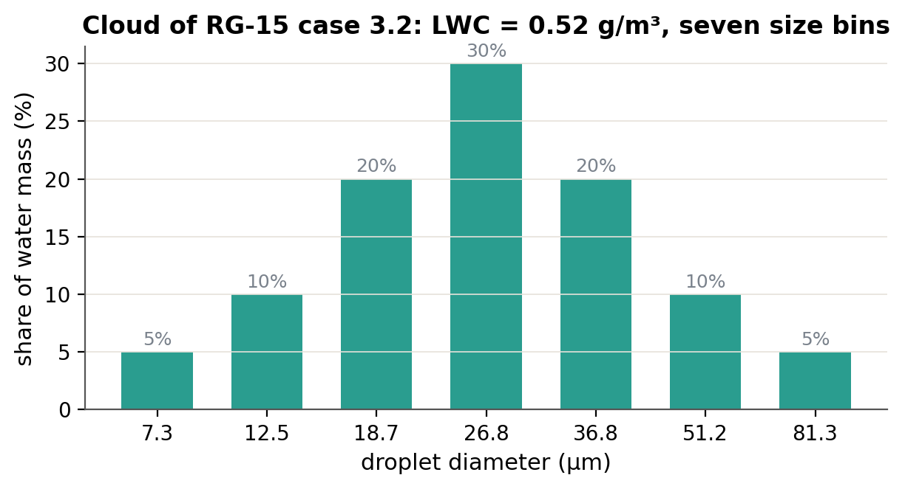
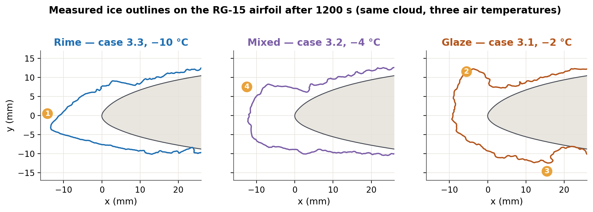

Icing physics in plain words
The handful of physical ideas you need before reading the solver: supercooled droplets, how much water reaches the wing, why some water freezes at once and some does not, and why ice shapes differ so much with only a few degrees of temperature change.
- Supercooled clouds Basic
- How much water hits the wing Basic
- Why not all water freezes Basic
- Rime, mixed and glaze ice Basic
- Putting numbers on it Intermediate
- Why simulation is hard Intermediate
- How these ideas map onto the solver Intermediate
Supercooled clouds Basic
Pure water in small droplets does not freeze at 0 °C. It needs a nucleus, such as a speck of dust or an ice crystal, to start freezing. Without one, cloud droplets stay liquid well below 0 °C. These droplets are called supercooled. They are unstable: when one touches a surface such as a wing, it starts to freeze.
Three numbers describe an icing cloud for the solver:
- Liquid water content (LWC): mass of liquid water per volume of air. Icing clouds
have a fraction of a gram per cubic metre. The solver uses SI units, so 0.52 g/m³ is written
"lwc": 0.00052(kg/m³). - Droplet size: usually summarised by the median volumetric diameter (MVD), the diameter that splits the water mass in half. Typical values are 15–40 µm. A single MVD can stand in for the whole cloud, or the cloud can be split into size bins, each carrying a share of the water mass (Figure 1).
- Air temperature and speed: these decide how quickly the surface loses heat.

nodal_case_32.json. Seven droplet sizes from 7.3 to
81.3 µm carry 5–30 % of the water each. The 26.8 µm bin carries the most and sits at the measured MVD
(26.8 µm, data/rg15_ipw2/conditions.json). Large droplets are few, but they hit the
wing over a wider area.How much water hits the wing Basic
Air flowing towards a wing slows down and turns to pass around it. Droplets are much denser than air, so they do not turn as easily. Small droplets mostly follow the air and miss. Large droplets keep going nearly straight and hit. Where and how hard they hit depends on droplet size, speed and the size of the body. One dimensionless number captures this: the Stokes number, the droplet's stopping distance divided by the body size.
The local collection efficiency β compares the water that actually lands on a piece of wall with the water that would land if the droplets did not swerve at all:
$$\beta = \frac{\text{water mass rate hitting a wall piece}}{\mathrm{LWC}\;U_\infty\;\Delta s} \;\approx\; \frac{\Delta y_0}{\Delta s}$$Here \(U_\infty\) is the free-stream speed and \(\Delta s\) the length of the wall piece. β is largest near the stagnation point and falls to zero at the impingement limits. The droplets page shows the computed β curve for the RG-15 case. The water mass flux reaching the wall is then \(\dot m'' = \beta\,\mathrm{LWC}\,U_\infty\) in kg/(m²·s).
β answers "what fraction of the water in front of this bit of wing actually lands on it?". Big droplets, fast flow and small, sharp leading edges give β close to 1. Small droplets around a big, blunt body give small β.
Why not all water freezes Basic
Freezing releases heat. Every kilogram of water that turns to ice gives off the latent heat of fusion, about 334 kJ. If that heat is not carried away, the surface warms up to 0 °C and freezing stops. So the amount that freezes depends on how fast the surface can lose heat. It loses heat in four main ways:
- Convection: the cold air flowing past cools the surface. This is the biggest term. Its strength is the heat-transfer coefficient \(h\) (W/m²K), which the CFD provides.
- Evaporation (or sublimation from ice): water leaving as vapour takes a lot of heat with it (about 2.5 MJ/kg).
- Warming the incoming droplets: droplets arrive below 0 °C and must be warmed to the freezing point first.
- Conduction into the ice and the airfoil underneath.
Two effects warm the surface: aerodynamic heating (air slowing down near the wall warms slightly; the solver uses a recovery temperature) and the droplets' kinetic energy on impact. Both are small at 25 m/s but are kept in the balance.
The share of the arriving water that freezes is called the freezing fraction \(n\), between 0 and 1. If \(n = 1\), every droplet freezes where it lands. If \(n < 1\), the surface sits at 0 °C, covered by a thin liquid film. The air pushes the film back along the wing, where it may freeze later. This is called runback.
This way of treating a small piece of wall as a box with mass and energy flowing in and out is the Messinger model (1953). It is the basis of almost all icing codes, including this one. The energy balance page goes through every term.
Rime, mixed and glaze ice Basic
The freezing fraction decides what the ice looks like:
- Rime ice (cold, roughly below −10 °C, \(n = 1\)): droplets freeze on impact. Air gets trapped, so the ice is white and opaque. The shape follows where droplets hit, often a streamlined "spearhead" pointing into the flow.
- Glaze ice (near 0 °C, \(n < 1\)): water runs back before freezing. The ice is clear and dense, and it often grows horns on either side of the leading edge. Horns are the worst for aerodynamics because they make the flow separate.
- Mixed ice: in between, with a rime-like core and glaze features.

data/rg15_ipw2/processed/*_open_x35mm.csv). The cloud, speed (25 m/s) and
exposure (1200 s) are the same; only the air temperature changes. (1) Rime at −10 °C: a pointed
shape that grows straight into the flow. (4) Mixed at −4 °C: a blunter, flatter front.
(2, 3) Glaze at −2 °C: water runs back and freezes off the stagnation line, forming an upper
horn (2) and a lower ridge (3). The outlines are open curves that stop 35 mm behind the leading edge.
Their exact registration on the airfoil is uncertain by a fraction of a millimetre (see
validation).Putting numbers on it Intermediate
Two back-of-the-envelope estimates, using the RG-15 conditions, show the size of things.
How thick can the ice get?
If every droplet in front of the leading edge hit and froze (β = 1, \(n = 1\)), the ice would thicken at
$$\frac{\beta\,\mathrm{LWC}\,U_\infty}{\rho_{ice}} = \frac{1 \times 0.00052 \times 25}{917} \approx 1.4\times10^{-5}\ \text{m/s},$$that is, about 17 mm in 1200 s. The measured rime front grew about 14 mm (Figure 3), which fits a peak β somewhat below 1 and ice that is not exactly 917 kg/m³. This simple rate, \(\beta\,\mathrm{LWC}\,U_\infty\), is the starting point of the droplet calculation.
How much can the droplets' own coldness absorb?
Before freezing, a droplet at temperature \(T_d\) must be warmed to 0 °C. That costs \(c_w (T_m - T_d)\) per kilogram, with \(c_w \approx 4.2\) kJ/(kg·K). Compare it with the latent heat released by freezing, \(L_f \approx 334\) kJ/kg:
| Case | Air / droplet temperature | Heat to warm droplet | As share of latent heat |
|---|---|---|---|
| 3.1 glaze | −2 °C | ≈ 8 kJ/kg | ≈ 2.5 % |
| 3.2 mixed | −4 °C | ≈ 17 kJ/kg | ≈ 5 % |
| 3.3 rime | −10 °C | ≈ 42 kJ/kg | ≈ 13 % |
So the droplets themselves soak up only a small part of the freezing heat. Most of it must go into the air by convection and evaporation. Both grow roughly in proportion to how far the surface is above the air temperature. At −10 °C the air can carry the heat away; at −2 °C it often cannot, and a film forms. That is why a few degrees separate rime from glaze.
The heat that can be removed is roughly \(h\,(T_m - T_{air})\) plus evaporation. It shrinks towards zero as the air approaches 0 °C. The heat that must be removed to freeze everything is \(\dot m'' L_f\), which does not depend on temperature. When the first is smaller than the second, \(n < 1\).
Why simulation is hard Intermediate
- Everything feeds back. Ice changes the shape. The shape changes the airflow, which changes where droplets land and how fast heat leaves. So the calculation has to be repeated as the ice grows (the "shots" of the icing loop).
- Ice is rough. Rough ice increases heat transfer and changes the boundary layer, and its roughness is not known in advance. The solver has roughness models, but calibrating them for ice is an open problem (airflow page).
- Small scales matter. Horns, pockets and sharp tips are millimetres across on a 300 mm wing. The wall must be finely resolved, and the CFD mesh must follow every change (mesh page).
- Water is complicated. Films run back, break into rivulets, are shed from the surface, or splash on impact. Each needs a model, and each model has limits (film page).
- Experiments are hard to match exactly. Tunnel walls, uncertain conditions and uncertain measured outlines all make comparison difficult (validation page).
How these ideas map onto the solver Intermediate
| Physical idea | In the solver | Page |
|---|---|---|
| Airflow, heat-transfer coefficient \(h\), wall shear | SU2 RANS with an isothermal wall; wall fields read back by fields.py | 3 |
| Droplet paths, β, impingement limits | Lagrangian trajectories in droplets.py, with mass-weighted seeds and size bins | 4 |
| Messinger balance, freezing fraction | thermo.py (panel model), nodal_phase.py (conducting path) | 5 |
| Runback film | Thin-film lubrication flux with finite volumes on wall panels | 6 |
| Conduction into ice and airfoil | 2D triangle mesh of ice + substrate, enthalpy method | 7 |
| Ice thickness from mass | Mass → volume with ice density; layered growth of the wall | 8 |
| Glaze: water inside the ice, melting | Phase-aware columns and the glaze campaign | 10 |